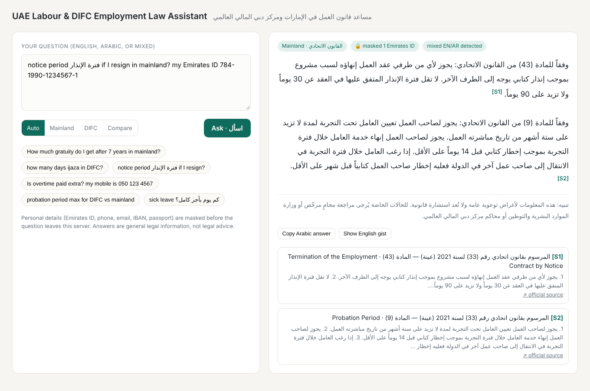
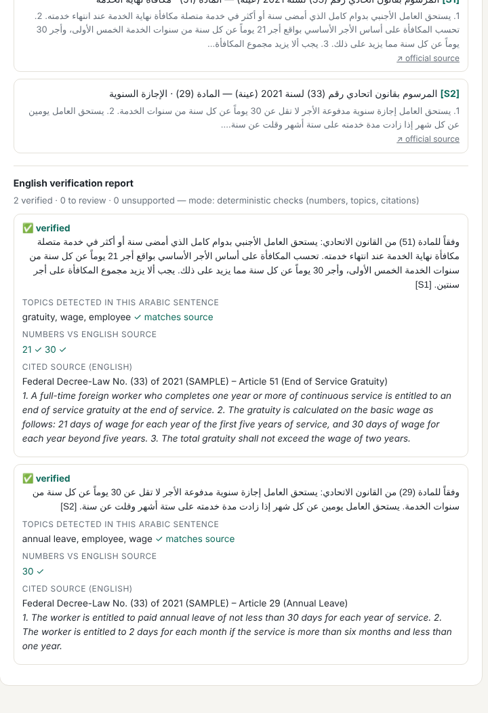

Ask in English. Get a cited answer in Arabic. اسأل بالإنجليزية، واحصل على إجابة موثّقة بالعربية
An AI assistant that answers employee and candidate questions on UAE Labour Law and the DIFC Employment Law: leave, probation, notice periods, gratuity, working hours. Questions can be in English, Arabic or a mix. Answers come back in Arabic, with the exact law article cited, personal data masked, and an English check so reviewers who don't read Arabic can trust them.
Where this fits in a GCC people team
Employment questions come in all day, in two languages, under two legal regimes. Getting them wrong costs disputes, delayed offers and lost trust. This is the kind of system I'd build for your team.
Bilingual employee helpdesk
"How many sick days are fully paid?" or "كم مدة الإنذار؟" answered instantly, in Arabic or with an English summary, each answer pointing to the article it relies on.
Faster, accurate offer conversations
Probation length, notice period and gratuity explained to candidates consistently, with mainland and DIFC differences handled automatically.
One consistent answer across clients
Staffing and employer-of-record partners serving mainland and DIFC clients get the same grounded answer every time, with an audit trail.
Traceable and privacy-first
Every answer is logged with the articles used and the checks it passed. Personal data never reaches the AI model or the logs.
Why a simple chatbot isn't enough: legal answers in the UAE are bilingual, and the wrong language changes the law
HR teams, employees and advisors ask employment questions in English, often mixed with Arabic terms or Arabic typed in Latin letters. The answer is often needed in Arabic. A plain "retrieve English, translate to Arabic" chatbot fails in four ways:
The Arabic text is the law
For federal legislation the Arabic version prevails in any conflict. Machine-translating the English version back into Arabic produces legal wording that may not match the official text.
Two regimes, different rules
Mainland employers follow the federal law; DIFC has its own law and courts. Gratuity, notice and leave rules differ, so mixing them gives confidently wrong answers.
People don't type clean English
notice period فترة الإنذار?, how many days ijaza? and Arabic-Indic digits like ٣٠ all break keyword search and naive translation.
Reviewers can't read the output, and users paste personal data
Teams without Arabic speakers can't tell if an answer is right. Users paste Emirates IDs, phone numbers and IBANs into questions.
A mixed-language question, answered in Arabic with citations
The question mixes English and Arabic and contains an Emirates ID. The ID is masked before retrieval and generation. The system routes to mainland law, cites the notice-period article, and adds the disclaimer.

Ten stages from question to verified answer
Every stage is a small, testable module. The defaults run fully offline, and switching to OpenAI or Azure OpenAI (UAE North region) is a configuration change.
PII vault
Emirates ID, UAE phone, email, IBAN, card, passport and names become placeholders like <EMIRATES_ID_1>.
Code-switch normaliser
Splits English and Arabic text, maps Arabizi, normalises digits, links legal concepts.
Input guard
Prompt injection (EN + AR), scope, other countries, harmful intent, high-stakes flag.
Jurisdiction router
Mainland, DIFC, or both (compare). ADGM is detected and declined.
Hybrid retrieval
EN and AR queries × BM25 and dense search, fused with Reciprocal Rank Fusion.
Article pairing
Each article is returned with its official Arabic and English versions side by side.
Generation
Modern Standard Arabic, a citation after every rule, official Arabic wording reused.
Output guard
Citations valid, every number grounded in the source, Arabic ratio, PII leak scan. One retry with feedback.
English verification
Per-sentence check against the English source, plus back-translation and an LLM judge.
Audit
Hashed query, redacted text, cited articles and flags. Raw text is never stored.
The choices that matter in a legal, bilingual system
Quote the Arabic, don't translate it
Federal articles are paired with their official Arabic text, so the model reuses authoritative wording. DIFC law exists only in English, so those answers are labelled ترجمة غير رسمية (unofficial translation).
Route before you retrieve
An explicit, auditable router separates mainland and DIFC. When the question is ambiguous, the answer compares both regimes instead of guessing.
Articles as the unit of truth
Small clause chunks retrieve well, but citations always point to whole articles. Table-of-contents duplicates are removed during ingestion.
Deterministic guardrails first
Rules are cheap, explainable and unit-tested. LLM-based checks are an extra layer, not the foundation.
Numbers as a cross-language anchor
Days, percentages and years look the same in any language. Any number in the answer that isn't in the cited source triggers a retry.
Runs on locked-down laptops
The core is pure Python, so it runs under Windows Smart App Control. CI simulates that environment on every push.
Built for how people in the UAE actually type
A bilingual legal glossary (English, Arabic and Arabizi forms) turns messy input into two clean search queries, one per language.
| User types | What the system understands | Retrieved |
|---|---|---|
sick leave كم يوم بأجر كامل in mainland? | Arabic span → sick leave, full pay; route → mainland | Federal Art. 31 |
how many days ijaza in DIFC? | Arabizi ijaza → annual leave → الإجازة السنوية | DIFC Art. 27 |
fatrat al tajruba max for mainland? | Arabizi phrase → probation period | Federal Art. 9 |
notice period ٣٠ يوم | Arabic-Indic digits → 30 | Federal Art. 43 |
كم ساعة العمل اليومية في القطاع الخاص؟ | Arabic only; private sector → mainland | Federal Art. 17 |
notice period DIFC vs mainland | Both regimes → two-section comparison | Art. 43 + DIFC Art. 62 |
An answer only goes out when it can be trusted
Guardrails
- Prompt injection blocked in English and Arabic, including instructions hidden in retrieved text
- Off-topic, other-country and harmful requests refused politely in Arabic
- Every [S1] citation must point to a real retrieved article
- Numbers not found in the source trigger one regeneration with validator feedback
- High-stakes questions (lawsuits, absconding) get an extra "seek legal advice" note
Data privacy
- UAE-specific PII masked before the model, the guardrails or the logs see it
- Placeholder map lives in memory for one request and is never stored
- Audit log keeps a SHA-256 hash and the redacted query, with a retention purge
- Azure OpenAI in UAE North or self-hosted models for data residency (UAE PDPL, DIFC DP Law)
- No-store caching, security headers and rate limiting by default
"How do I know it's right if I can't read Arabic?"
Each Arabic sentence gets an English verification card: the cited article in English, every number checked against that source, the legal topics detected, and (with a live model) a literal back-translation and a judge verdict.
The same check found a real glossary gap during testing, before any user could hit it.

Measured, not assumed
A 23-case evaluation set covers English, Arabic, code-switched, Arabizi, comparison and adversarial questions. These baseline numbers come from the bundled sample corpus in offline mode. They are the regression baseline before running on the official PDFs with production models.
Engineering
- 37 automated tests: unit, API and end-to-end
- CI on every push, including a simulated Windows Smart App Control run
- Runs three ways: pure Python, Docker, or FastAPI
- Offline mode with no API keys, for demos and CI
Stack
Roadmap
Amendment-aware answers
Effective dates per article, so users can ask what the law said in a given year.
Calculator tools
Gratuity and leave calculations done by deterministic tools the model calls, not by generated arithmetic.
KSA: Saudi Labor Law
Add Saudi Labor Law as a third regime, with routing between UAE mainland, DIFC and KSA, plus Saudi PDPL-aligned data handling.
Architecture, code, tests and run steps are all on GitHub
Technical teams can clone it and run the 10-question smoke test in a minute with no API key, then point it at the official laws.
General legal information, not legal advice. The federal law's Arabic text is the authoritative version.